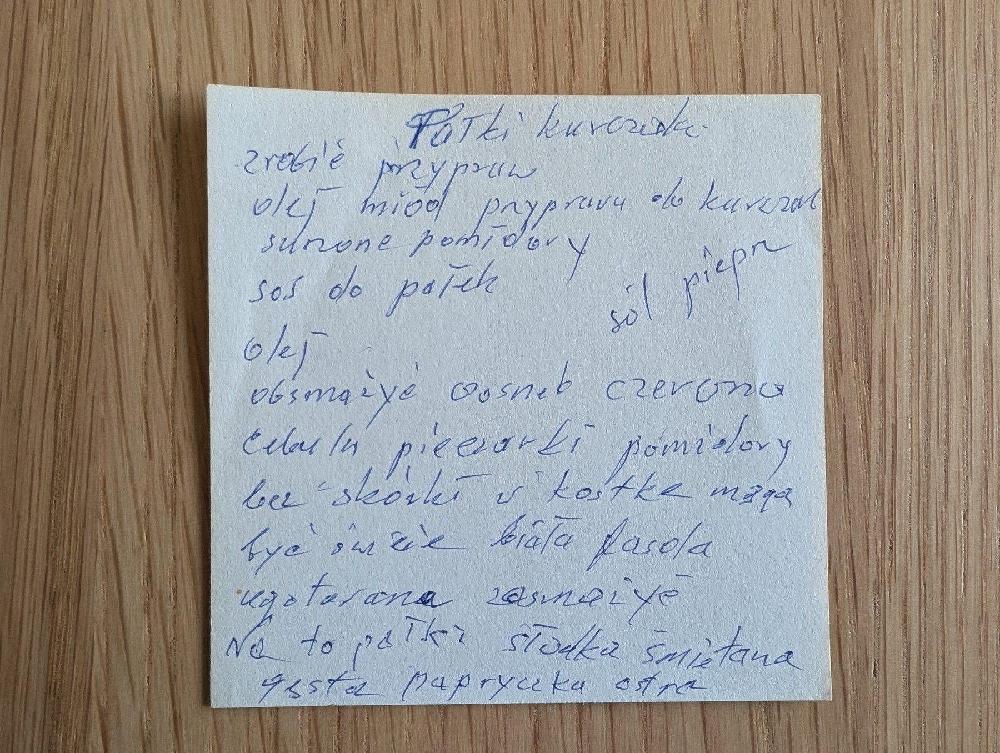

Pałki kurczaka ze śmietaną

Składniki
- pałki z kurczaka
- olej
- miód
- przyprawa do kurczaka
- sól, pieprz
- suszone pomidory
- czosnek
- czerwona cebula
- pieczarki
- pomidory bez skórki (mogą być świeże)
- ugotowana biała fasola
- gęsta słodka śmietana
- ostra papryczka
Przygotowanie
- Zrobić marynatę: olej, miód, przyprawa do kurczaka, sól, pieprz – natrzeć pałki.
- Na oleju obsmażyć czosnek, czerwoną cebulę, pieczarki i pomidory pokrojone w kostkę.
- Dodać ugotowaną białą fasolę i zasmażyć.
- Na to pałki, gęsta słodka śmietana i ostra papryczka.
Oryginalny zapis
Pałki kurczaka zrobić przypraw olej miód przyprawa do kurczaka suszone pomidory sos do pałek sól pieprz olej obsmażyć czosnek czerwoną cebulę pieczarki pomidory bez skórki w kostkę mogą być świeże biała fasola ugotowana zasmażyć Na to pałki słodka śmietana gęsta papryczka ostra